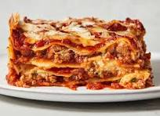

Lasagna

About our Lasagna
Our lasagna is a rich and comforting classic, made with layers of tender pasta, savory meat sauce, and creamy ricotta cheese.
Topped with gooey mozzarella and baked to perfection, it’s a hearty dish that feels like home.
Every bite of our lasagna is packed with flavor – from the slow-cooked tomato sauce to the blend of herbs and cheeses.
Whether you’re dining in or taking out, it’s the perfect choice for anyone craving a warm, satisfying meal.
ingredients
- Lasagna noodles
- Ground beef
- Tomato sauce
- Ricotta cheese
- Mozzarella cheese
Cooking steps
- Cook meat
- - Sauté ground beef with onion and garlic, then add tomato sauce.
- Boil noodles
- - Cook lasagna noodles until al dente (skip if using oven-ready).
- Mix cheese
- - Combine ricotta with egg, salt, and herbs.
- Layer
- - In a baking dish: sauce, noodles, ricotta mix, mozzarella – repeat layers.
- Bake
- - Cover and bake at 180°C (350°F) for 40–45 mins, then uncover to brown top.
Home